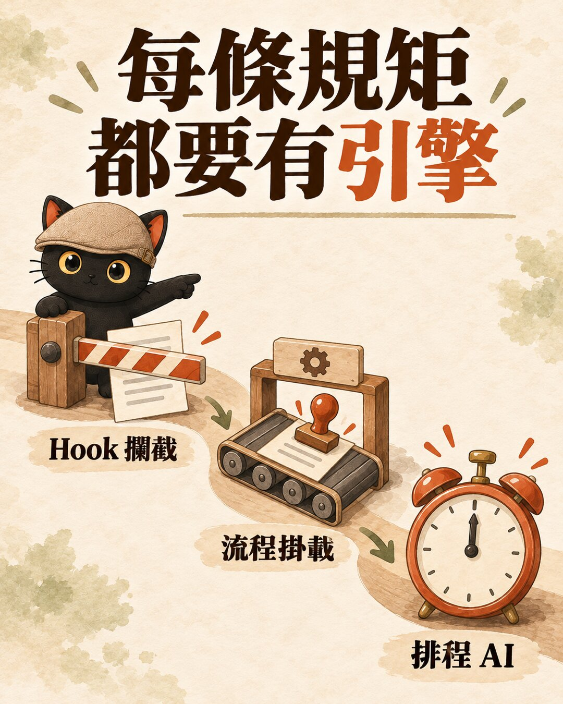
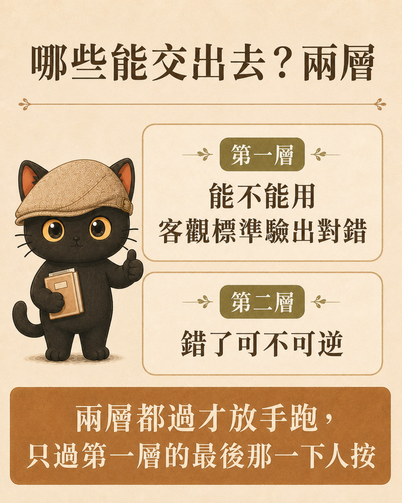
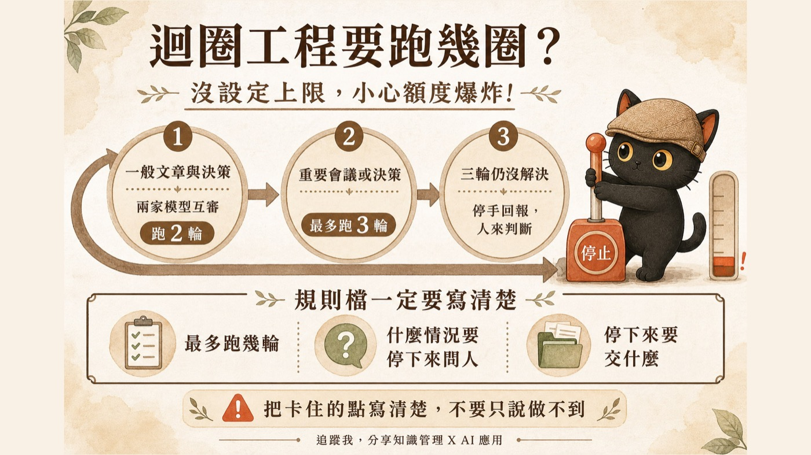

這篇在講什麼
交辦給 AI 的事做歪，常見原因是它沒看過全貌就動手。我在網路上看到一套軟體工程師用 AI 的做法：AI 先讀完整份程式碼分析，再問人，人拍板後才動手。我做的是 AI 知識管理，AI 要先讀的是我的規則、做法說明和知識庫。這篇把兩套方案拆開講清楚，再放在一起比，文末附一段交辦前可以直接貼的提示詞。
- 常常交辦給 AI，結果方向只對一半的人
- 一個人做事，想讓 AI 員工少問一點、又不要亂做的一人公司
- 在幫團隊或客戶設計 AI 工作流程的人
- 軟體公司讓 AI 先分析再動手的五個步驟，和他們常卡住的三個地方
- 我的 AI 知識管理方案：知識庫裡放了哪幾樣東西，各自在交辦裡做什麼
- 兩套方案的對照表，和一段交辦前可以直接複製的提示詞
交辦給 AI 的事，為什麼常常做得跟你想的不一樣
丟一句話叫 AI 回客戶信、寫提案、整理資料，結果常常方向對了一半。常見的原因是它沒看過你的資料，只能從你那一句話去猜。
讓 AI 做得更快，這個問題不會消失。它只會更快猜錯。
軟體工程師怎麼用 AI：先分析再動手的五步方案
最近在網路上看到一套軟體公司導入 AI 的方案。對象是幫不同客戶做系統的軟體公司，很多案子是業務接回來的。
他們常卡住的三個地方
- 每個客戶各改一份。工程師趕時程時，最快的做法是把整套程式複製一份，改成這個客戶要的樣子。客戶一多，就有好幾份長得很像又不一樣的程式。之後要加一個功能，得先搞清楚要改哪幾份，AI 也一樣搞不清楚。比較好的做法是共同的部分只留一份，每個客戶特別要的抽出來做成外掛。
- 需求一路傳話。業務最懂客戶，產品經理最懂這個行業，工程師最懂技術做不做得到。傳統流程是一個接一個傳，業務講不清楚，產品經理夾在中間，工程師等著做。
- 還沒看清楚就開單。開單的人不知道系統各部分的差別，只先把客戶的話記下來，所以重複單、相似單很多。
很多人會想先把單分成「簡單的給 AI 自動做、難的給人做」。這套方案的看法是：一件事簡單還是複雜，要分析完才知道。只改到一個獨立區塊算簡單，牽動好幾個區塊就算複雜。分析前就分類，只是在猜。單本身是沒看清楚就開的，再多 AI 去接也一樣做不好。
改成五步
按「下一步」一格一格看：AI 在哪一步才去問人、誰負責點頭、哪一步會來回重複。
徽章：自動 AI 自己跑 人把關 人看過才往下 人做 人自己動手 ↻ 迴圈＝重複跑到條件成立才停。斜線底＝在等別人。每一格都可以點開看細節。
文字版流程（表格）
| 步驟 | 做什麼 |
|---|---|
| 1. 需求進來 | 舊客戶由客服接，新客戶由業務接，照樣開單。工單系統留著，只是開完單不直接丟給 AI 做 |
| 2. AI 先分析 | AI 要能讀到完整的程式碼。它做三件事：找出這張單會動到哪些地方、看哪些單改的地方相近可以一起做、寫成規格。規格裡標明上下游：源頭是客戶的什麼需求，下游會動到哪段程式 |
| 3. AI 問人 | AI 先盤點自己做了哪些假設，再去問人。行業問題問產品經理，技術架構問工程師，各問 10 到 20 題。產品經理和工程師從自己動手做，變成被 AI 請教的顧問 |
| 4. 人拍板 | 問題都釐清後，由人審過計畫並標記「採納」 |
| 5. 交給 AI 實作 | 把影響範圍、規格、追蹤和要改的程式打包成一份，交給工程師電腦裡專門寫程式的 AI 工具（例如 Claude Code 或 Codex）實作、測試、提交。寫程式的 AI 拿到全貌才動手 |
我的 AI 知識管理方案：讓 AI 員工先讀懂我的資料
我做的是知識管理和教學，沒有程式碼。AI 要先讀的全貌，是我的知識庫：規則、做法說明、筆記和紀錄。
一人公司也沒有產品經理和工程師，這兩個角色都是我自己。如果每件事都回來問我，我就變成整天在回答問題。所以我把知識庫整理成下面幾個部分，讓 AI 先自己查、自己決定能決定的，問到我這裡的只剩它真的決定不了的事。
我的知識庫裡有什麼
| 部分 | 是什麼 | 在交辦裡做什麼 |
|---|---|---|
| 規則主檔 | 一份所有 AI 開工都要先讀的檔案，寫硬規則，也寫遇到什麼事要先讀哪份說明 | 不管用哪家 AI，看的都是同一份規矩 |
| 技能包 | 每一類工作一份做法說明，例如寫脆文、整理逐字稿、做網頁 | AI 接到這類工作，先讀對應的那份再動手 |
| 自動攔截 | 漏掉代價很高的規則，用程式在 AI 動手的當下直接擋。例如 AI 一要下刪除檔案的指令，程式就先擋下來，刪除一律改成搬到垃圾桶 | 不靠 AI 記得，做錯的當下就被擋下來 |
| 待辦清單 | 要做的事都寫進 Trello，寫到換一個 AI 接手也能照做 | 需求從這裡進來 |
| 工作日誌 | AI 做完事留下的紀錄 | 下一個接手的 AI 知道上次做到哪 |
| 跨家審稿與投票 | 一家公司的 AI 寫的東西，交給另一家公司的 AI 審；執行細節的取捨讓三家公司的 AI 投票 | 避免同一家 AI 自己檢查自己 |
同一個順序，一人公司版本
同樣按「下一步」看：哪些格子是 AI 自己跑的、哪些要我把關，以及審稿的迴圈在哪裡。
徽章：自動 AI 自己跑 人把關 人看過才往下 人做 人自己動手 ↻ 迴圈＝重複跑到條件成立才停。斜線底＝在等別人。每一格都可以點開看細節。
文字版流程（表格）
| 方案步驟 | 我的做法 |
|---|---|
| 1. 需求進來 | 要做的事都寫進 Trello，而且要寫到不開我的筆記也能照做 |
| 2. AI 先分析 | AI 員工動手前，先把規則主檔和這類工作的技能包讀完，不准憑記憶做。查我的待辦清單要讀到最後一行，要說「沒有」之前先整份看過一遍 |
| 3. AI 問人 | 查得到的事實，AI 自己查完自己定。執行細節的取捨，先讓三家公司的 AI 各自判斷，兩家同意就照做。只有策略、改規則、只有我知道的事，才回來問我 |
| 4. 人拍板 | 商業決策 AI 不拍板，只整理成選項和利弊交給我。改規則、把東西正式上線這類大事，要先寫計劃、做備份，再找另一家公司的 AI 審 |
| 5. 交給執行 | 規劃和執行可以交給不同模型，交接用固定的格式寫清楚。成品交給另一家公司的 AI 審過才算完成 |
- AI 一直停下來要授權，怎麼讓它順順跑完？：迴圈護欄的五條規則：這一段只講哪些事才回來問我，那篇講怎麼讓 AI 不要動不動停下來要授權
- 換了另一家 AI，技能包要怎麼搬？：交接指令，難的是決定不寫什麼：這一段只講交接要用固定格式，那篇講交接指令怎麼寫
- 頂規 AI 模型很貴，哪些事交給它、哪些交給便宜的？：這一段只講規劃和執行可以分開，那篇講貴的模型和便宜的模型實際怎麼分工
這套方案裡的機制，我之前畫過
上面流程圖裡的「自動攔截」「人把關」「迴圈」，我之前各寫過一篇，圖也畫過。放在這裡對照著看。

自動攔截：規矩要掛上引擎才會被執行
寫在規則檔裡的規矩，AI 不一定每次都照做。所以每條要持續執行的規矩，都要掛上一種引擎：Hook 攔截、掛在既有流程的某一步、或排程 AI 定時去跑。流程圖裡的「自動攔截」那條道，就是第一種。


兩套方案放在一起看
| 軟體公司 | 我的一人公司 | |
|---|---|---|
| AI 要先讀的全貌 | 完整的程式碼 | 規則主檔、技能包、知識庫 |
| 需求從哪進來 | 工單 | Trello |
| AI 問誰 | 產品經理、工程師 | 先讓三家 AI 投票，決定不了的才問我 |
| 誰拍板 | 人審過計畫，標記採納 | 我；大事先寫計劃、做備份、找另一家 AI 審 |
| 誰執行 | 工程師電腦裡寫程式的 AI 工具（Claude Code 或 Codex） | 也是 Claude Code 或 Codex，換手時用固定交接格式 |
| 怎麼確認做對 | 實作後測試再提交 | 另一家公司的 AI 審過才算完成 |
兩套的順序一樣：AI 先看全貌、先問、等人拍板才動手。差別在 AI 要讀的東西和它去問誰。
交辦前可以直接貼的提示詞
還沒有整套流程也沒關係，可以先從這一步開始。下次交辦任務前，先貼這段：
AI 列出來的問題，通常就是你自己沒講清楚的地方。
- 這篇提到過的：迴圈護欄的五條規則、交接指令怎麼寫、貴模型和便宜模型的分工
- 再往前後延伸：如何訓練自己的 AI 員工：員工＋顧問框架、AI 寫的東西我怎麼確認它是對的？
想一起訓練自己的 AI 員工？
我每個月有兩場免費線上講座，也在 LINE 社群分享一人公司 ＋ AI 員工的應用技巧。